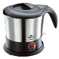
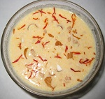

Self-cooking...
Makes Cooking Easy
Created by: Vishalika Choraria
Menu
Settings
Themes
You can select from different themes, like:
Sky -
Beige -
Simple -
Serif -
Night -
Default
HOME
Basic Requirement
Electric Kettle - Induction These two are the basic requirements for preparing the dishes and this app will guide those students who are away from home and those individuals who are interested in cooking as well.MENU
Electric Kettle
 Varieties of Electric kettle are present in the market. I have used the Bajaj kettle and all the dishes are tried and tested in this kettle. You can buy any known branded kettle for use. Follow the instructions given by the company along with the kettle for boiling and cleaning purpose.MENU
Induction
Varieties of Induction are available in the market. I have used the Prestige induction and all the dishes are tried and tested in this induction. You can buy any known branded induction for use. Follow the instructions given by the company along with the induction for boiling and cleaning purpose.MENU
Aloo Mash
Ingredients:
- 2-3 potatoes
- 2 onions
- 2 tbsp chilli powder
- 1 tbsp salt or as desired
- 1-2 tbsp tomato sauce
It's Recipe
How to make Aloo Mash:
- Add water to the Electric kettle and switch on it to boil.
- After 2 minutes add potatoes and allowed it to boil for approx 5 minutes.
- Check it again and allowed it to boil for 5 more minutes.
- By the time chop the onions.
- Take out the boiled potatoes from the kettle and allowed it to cool.
- Peel the skin of the potatoes and mash it up with your hands.
- Add the left out ingredients and mix it well.
- Your Aloo Mash is ready to eat with boiled rice or as suitable.
MENU
Bhelmoori
Ingredients:
- 2 bowl Moori or puffed rice
- 1 onion chopped
- 1 boil potato
- 2 green chillies thinly chopped
- 1 tbsp tomato ketchup
- 2 carrot thinly chopped
- Salt to taste
- 2 tbsp mustard oil
- Some peanuts
It's Recipe
How to make Bhelmoori:
- Boil water in the kettle for 2 minutes.
- Add potato to the boiling water.
- Close the lid and boil it for 5 minutes.
- Take out the boiled potato,peel and mash it up and mix the remaining vegetables with the tomato ketchup.
- Add mustard oil and the vegetable mixture to the bowl of moori/puffed rice.
- Mix it properly.
- Add the peanuts.
- Spicy Bhelmoori is ready to eat.
MENU
Boil Egg
Ingredients:
- 2 Eggs
- 2 cup water
It's Recipe
How to make Boil Egg:
- Add water to the kettle and switch on the kettle.
- Boil it for 2 minutes.
- Add two eggs at a time to boil in the kettle.
- Allow it to boil for 5 minutes.
- Boiled Egg is ready to eat.
MENU
Biryani
Ingredients:
- 1 cup rice
- 2 cup water
- 2 chopped onions
- 2 tomatoes chopped
- 2 green chilli chopped
- 1 carrot chopped
- 2 tbsp chilli powder
- 1/2 tbsp turmeric powder
- 1 tbsp salt to taste
- 1 tbsp lemon juice
- A pinch of cumin seeds
It's Recipe
How to make Biryani:
- Boil water in the electric kettle for two minutes.
- Add rice to the kettle.
- Close the lid of the kettle.
- Allow it to boil for 2 minutes.
- Open the lid and stir in between to prevent sticking.
- Rice is ready.
- Add butter/ghee in a sauce pan and put it in the induction.
- As soon as it is heated up add cumin seeds and green chilli.
- Add chopped onions,tomatoes and carrots.
- Reduce the temerature of the induction.
- Stir the mixture and add chilli powder,turmeric powder and salt to taste.
- After 2 minutes add the boiled rice.
- Stir properly and add lemon juice(optional).
- Your Biryani is ready.
MENU
Pohe
Ingredients:
- 2 cup Pohe (Flaked, beaten rice)
- 1 small onion
- 1 potato
- 1 tomato
- 3-4 green chillies
- 1 teaspoon lemon juice
- 2-3 teaspoon sugar
- salt to taste
- 1 tbsp oil
- 2 teaspoon mustard seeds
- 1 teaspoon asafoetida
- 2 teaspoon turmeric powder
It's Recipe
How to make Pohe:
- Soak Pohe in water. Drain water and keep it aside for 10 to 15 minutes.
- Now rub some salt, sugar and lemon juice to it.
- Chop green chillies, onion,potatoes,tomatoes.
- Place a sauce pan in the induction and heat oil in a pan.
- Add mustard seeds. When they splutter, add asafoetida,turmeric powder, onion pieces, potato pieces and green chillies.
- Reduce the temperature of the induction as necessary.
- Mix properly and when potatoes turn tender, add pohe and stir.
- Cover and cook for sometime. Remove the lid, stir and again allow it to cook for 2 minutes.
- Pohe is ready to eat.
MENU
Coffee
Ingredients:
- 2 tbsp coffee
- 3-4 tbsp milk powder
- 4 tbsp sugar
- 2 cup water
It's Recipe
How to make coffee:
- Boil water in the electric kettle as required.
- Add coffee,milk powder,sugar in a cup and then add little amount of water.
- Stir it till the sugar melts and the color of coffee changes.
- Add boiled water and stir it well.
- Your coffee is ready.
MENU
Chips
Ingredients:
- 2-3 potatoes
- Oil for deep frying
- Salt for sprinkling
- Chilli powder(optional)
- Tomato ketchup
It's Recipe
How to make chips:
- Place a heavy bottomed saucepan in the induction and add oil in it.
- Heat the oil setting the suitable temperature mentioned in the induction.
- Chopped the potatoes in a circular manner and wash with water and dried it up.
- Add the chopped potatoes for deep frying.
- Use a big sieve type spoon to bring out the fried potatoes when they attain brownish color.
- Use napkin to oak extra oil.
- Sprinkle salt and chilli powder to taste.
- Chips are ready to eat with tomato ketchup.
MENU
Soup
Ingredients:
- 4-5 tomatoes
- 1 onion chopped
- 4 cloves garlic crushed
- 1 tbsp butter/ghee
- A pinch of black pepper
- 2 green chillies chopped
- Salt to taste
It's Recipe
How to make soup:
- Boil the tomatoes in the electric kettle for 5-10 minutes.
- Peel and mash the boiled tomatoes.
- Place a saucepan in the induction with the required temperature.
- Add butter/ghee in the pan and after a few seconds add green chillies,garlic and onion.
- Stir it well for 1 minute.
- Reduce the temperature of the induction and add the puree of mashed tomatoes.
- Stir properly.
- Increase the temperature if required.
- Cook it for 5-10 minutes in the induction.
- Your soup is ready to eat.
MENU
Kheer
Ingredients:
- 1/2 litre Amul tazza milk
- 1 bowl rice
- 1 bowl sugar
- 10 finely chopped almonds
- 2 piece elaichi(optional)
It's Recipe
How to make kheer:
- Add water to the bowl of rice and keep it for sometime.
- Place a heavy bottomed saucepan in the induction and add milk for boiling.
- Boil the milk until it reduces to half.
- Boil rice in the electric kettle with the required measurement of water.
- Mix the cooked rice to the milk place in the induction.
- Stir properly.
- Add sugar and almonds.
- Stir until the mixture attains a thick sticky consistency.
- Add elaichi(optional)
- Your sweet dish is ready.
MENU
Maggi
Ingredients:
- 2 pack maggi noodles
- 2 cup water
It's Recipe
How to make Maggi:
- Add water to the kettle.
- Boil for 2 minutes.
- Add maggi noodles and stir.
- Add Maggi tastemaker which comes with its packet.
- Stir for few seconds and close the lid of the kettle.
- Boil it for 1-2 minutes
- The maggie is ready to eat.
MENU
Noodles
Ingredients:
- 1 pack noodles
- 1 onion chopped
- 2 tomatoes chopped
- 1 carrot chopped
- 2 green chillies chopped
- A pinch of cumin seeds
- 1 tbsp butter/oil
- 1 tbsp lemon juice(optional)
It's Recipe
How to make noodles:
- Boil water in the electric kettle for two minutes.
- Add noodles to the kettle.
- Close the lid of the kettle.
- Allow it to boil for 2 minutes.
- Open the lid and stir in between to prevent sticking.
- Noodles are boiled.
- Add butter/ghee in a sauce pan and place it in the induction.
- As soon as it is heated up add cumin seeds and green chilli.
- Add chopped onions,tomatoes and carrots.
- Reduce the temerature of the induction.
- Stir the mixture and add chilli powder,turmeric powder and salt to taste.
- After 2 minutes add the boiled noodles.
- Increase the temperature of the induction if necessary.
- Stir properly and add lemon juice(optional).
- Your noodles are ready.
MENU
Oats

Ingredients:
- 2-3 tbsp oats
- 1 cup water
- 1 tbsp milk powder
- 1/2 tbsp sugar
- 1-2 piece biscuit preferably Marigold biscuit
It's Recipe
How to make Oats:
- Boil water in the kettle or in the induction for two minutes.
- Add the amount of oats,sugar,milk powder in a bowl.
- Add the boiling water slowly and simultaneously stir the mixture.
- Add the biscuits in the mixture.
- Stir it properly.
- Delicious Oats are ready to eat.
MENU
Pakora
Ingredients:
- 2 potatoes
- 1/2 cabbage thinly chopped
- 1 onion thinly chopped
- A pinch of black pepper
- 1/2 tbsp turmeric powder
- 1/2 tbsp dhania powder
- 1 tbsp chilli powder
- 1-2 tbsp salt to taste
- Oil for deep frying
- 2-3 tbsp wheat flour/gram flour
- 2tbsp tomato ketchup
It's Recipe
How to make Pakora:
- Mix all the ingredients in a bowl properly except oil.
- Place a heavy bottomed saucepan in the induction and add oil to it.
- Heat it at the required temperature.
- Put small amount of mixture giving it a shape from your hands in the heated oil.
- Fry it until it attains brownish color.
- Follow the same procedure for the whole mixture.
- Spicy Pakoras are ready to eat with tomato ketchup.
MENU
Pasta

Ingredients:
- 1 pack pasta
- 1 onion chopped
- 2 tomatoes chopped
- 1 carrot chopped
- 2 green chillies chopped
- A pinch of cumin seeds
- 1 tbsp butter/oil
- 1 tbsp lemon juice(optional)
It's Recipe
How to make Pasta:
- Boil water in the electric kettle for two minutes.
- Add pasta to the kettle.
- Close the lid of the kettle.
- Allow it to boil for 2 minutes.
- Open the lid and stir in between to prevent sticking.
- Pasta is boiled.
- Add butter/oil in a sauce pan and put it in the induction.
- As soon as it is heated up add cumin seeds and green chilli.
- Add chopped onions,tomatoes and carrots.
- Reduce the temerature of the induction.
- Stir the mixture and add chilli powder and salt to taste.
- After 2 minutes add the boiled pasta.
- Increase the temperature of the induction as suitable
- Stir properly and add lemon juice(optional).
- Your Pasta is ready.
MENU
Popcorn
Ingredients:
- 1 pack of ACTSII popcorn or any other available in the market
- A pinch of salt to taste
It's Recipe
How to make Popcorn:
- Add the mixture contained in the popcorn packet to the electric kettle.
- Switch on the electric kettle and stir the mixture for 1/2 minute.
- Close the lid of the kettle.
- After 1-2 minutes open the lid.
- Add salt to taste.
- Your popcorn is ready
MENU
Rice
Ingredients:
- 1 cup rice
- 2 cup water
It's Recipe
How to make Rice:
- Boil water in the electric kettle for two minutes.
- Add rice to the kettle.
- Close the lid of the kettle.
- Allow it to boil for 2 minutes.
- Open the lid and stir in between to prevent sticking.
- Rice is ready to eat
MENU
Sandwich
Ingredients:
- 1 pack bread
- 2-3 potatoes
- 2 onions chopped
- 2 tomatoes chopped
- 2 green chilli chopped
- 1 tbsp salt or as desired
- 2 tbsp chill powder
- 1/2 tbsp turmeric powder
- 1 tbsp butter
- A pinch of black pepper,optional
It's Recipe
How to make Sandwich:
- Add water to the Electric kettle and switch it on to boil.
- After 2 minutes add potatoes and allowed it to boil for approx 5 minutes.
- Check it again and allowed it to boil for 5 more minutes.
- Take out the boiled potatoes from the kettle and allowed it to cool.
- Separate the covering of the potatoes and mash it up with your hands.
- Add the left out ingredients and mix it well.
- Add butter to one side of bread.
- Spread the aloo mash to that side of the bread
- Another piece of bread with butter is added so the aloo mash remains in between.
- Just like this apply the aloo mash to each pair of bread.
- Sanwiches are ready to eat.
MENU
Tea
Ingredients:
- 2 cup water
- 2-3 tbsp milk powder
- 2 tbsp sugar
- 1 tbsp tea
It's Recipe
How to make Tea:
- Boil water in the electric kettle for one minute.
- Add milk powder in the kettle and stir it.
- Boil it for another 1 minute.
- Add augar and tea.
- Close the lid of the kettle and boil it for 1 minute.
- Strain the tea through the sieve.
- Your tea is ready.